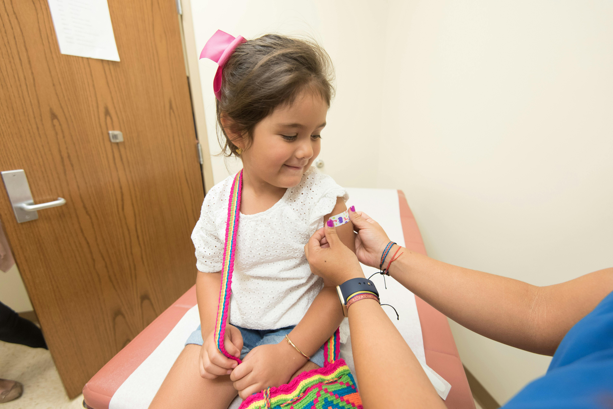

Vacinação
Por que é importante se vacinar?
As vacinas oferecem uma série de benefícios, incluindo a prevenção de doenças, proteção individual e coletiva, redução de complicações graves, contribuição para a erradicação de doenças e promoção da saúde ao longo da vida. São uma das intervenções de saúde pública mais eficazes, proporcionando segurança e bem-estar para indivíduos e comunidades.
Benefícios das Vacinas
As vacinas são fundamentais para prevenir doenças infecciosas, reduzir morbidade e mortalidade, criar imunidade de rebanho, economizar custos médicos, proporcionar proteção ao longo da vida e são seguras e eficazes. Em resumo, elas são uma das intervenções médicas mais importantes para melhorar a saúde pública e individual.
Importância da Vacinação em Massa
A vacinação em massa é essencial para proteger comunidades contra doenças infecciosas. Ela cria uma proteção coletiva, conhecida como imunidade de rebanho, que ajuda a prevenir surtos de doenças e protege grupos vulneráveis. Além disso, a vacinação em massa pode levar à erradicação de doenças e economizar recursos de saúde. É uma medida fundamental de saúde pública para promover o bem-estar geral da população.